|
Entrada de datos |
Para introducir nuevos datos o cambiar los existentes es necesario seguir una metodología, a causa de las dependencias que tienen algunas informaciones con otras. Se recomienda seguir el orden que tienen las opciones en el menú Datos.

Lo que encierra el rectángulo rojo son los datos necesarios para generar horarios. Lo encerrado en el rectángulo azul son herramientas de análisis y duplicación de información.
Datos Generales
El primer paso que se debe realizar es entrar los datos generales. Estos son la Cantidad de días para los períodos y la Cantidad de turnos por día.

Datos imprescindibles
Los formularios de entrada de los datos principales son bastante parecidos. Los podemos agrupar de la siguiente manera:
| Información | Datos que registran |
| Períodos y Especialidades |
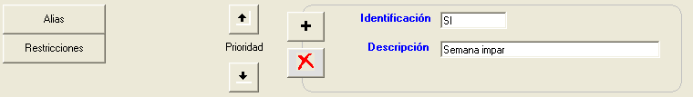 |
| Profesores |
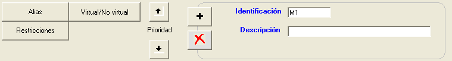 |
| Lugares |
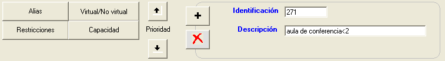 |
| Clasificación de actividades |
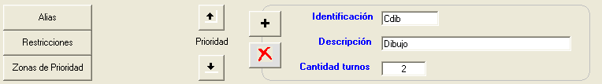 |
| Brigadas |
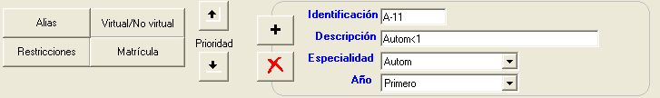 |
| Asignaturas |
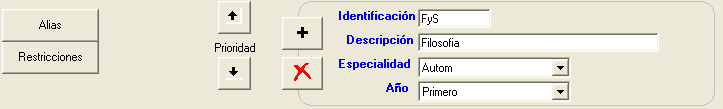 |
Funciones de los botones:
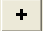
En dependencia de la información que se esté agregando aparecerá una ventana similar a la siguiente:
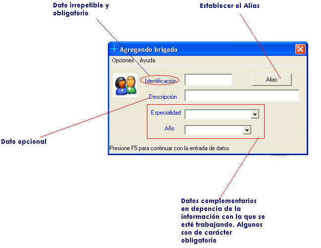
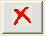
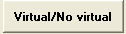
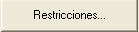
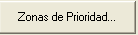
(botón de prioridad) Mueve un registro hacia arriba
(botón de prioridad) Mueve un registro hacia abajo
Establecer la capacidad de un lugar
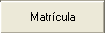
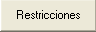
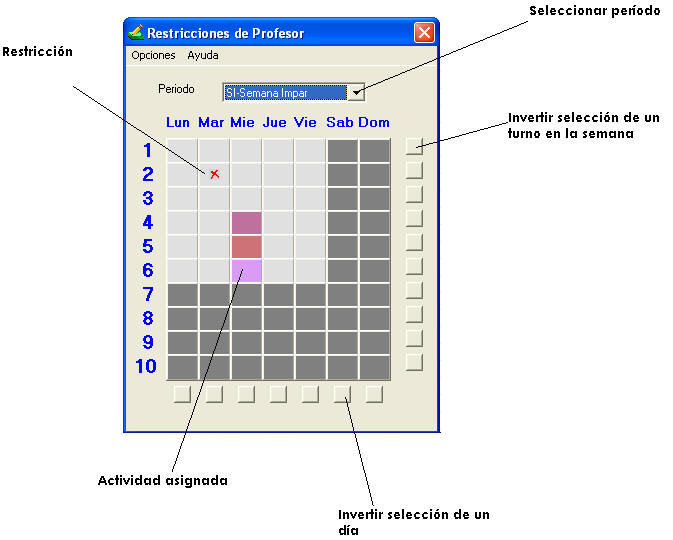
¿Cómo restringir?
-
Seleccione el período en lista de los períodos
-
Marque en la casilla que desee la restricción
-
Si desea marcar un mismo turno todos los día haga clic en uno de los botones de la parte derecha del casillero
-
Si desea marcar un día completo completo haga clic en uno de los botones de la parte inferior del casillero
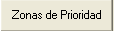
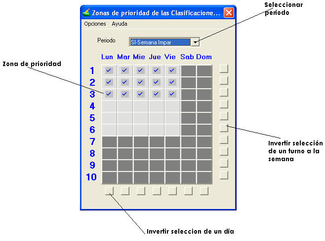
Similar a la ventana de restricciones, la metodología para establecer las zonas de prioridad es:
-
Seleccione el período en lista de los períodos
-
Marque en la casilla que desee la zona priorizada
-
Si desea marcar un mismo turno todos los día haga clic en uno de los botones de la parte derecha del casillero
-
Si desea marcar un día completo completo haga clic en uno de los botones de la parte inferior del casillero
Grupos por clasificación de actividad
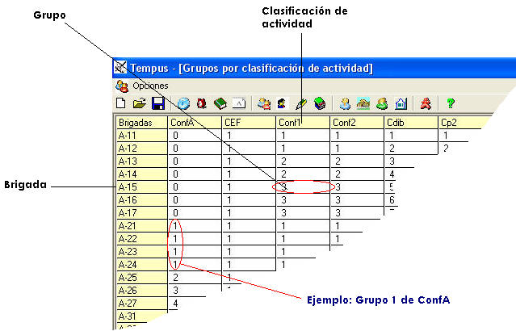
Establecer lugar Fijo:
-
Seleccione el grupo por clasificación
-
Seleccione el lugar en:
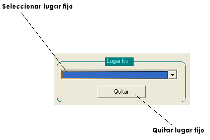
Establecer accesos prohibidos a lugares:
-
Seleccione el grupo por clasificación
-
Seleccione los lugares en:
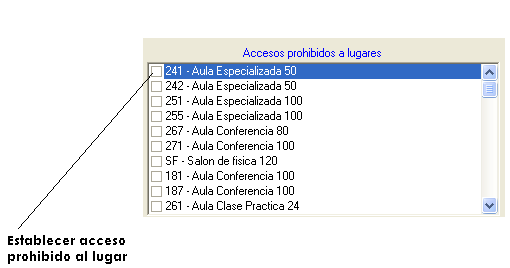
Desglose de actividades por período
A continuación de muestra la ventana de desglose de actividades. En ella podrá ver los desgloses, agregar actividades, y fijarlas si lo desea.
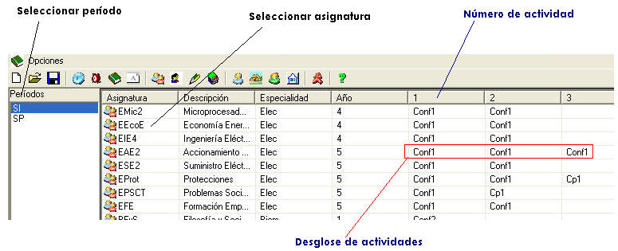
En la Parte inferior de la ventana se muestran las opciones para trabajar con los desgloses:
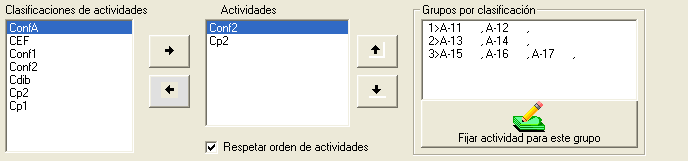
Funciones de los botones
Inserta una actividad al desglose
Extrae la actividad del desglose
Intercambia la actividad con la de arriba
Intercambia la actividad con la de abajo
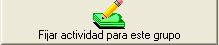
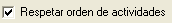
Distancia entre lugares
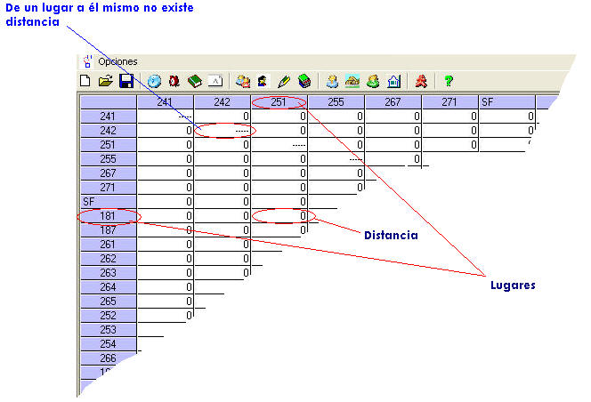
Asignación de recursos
Profesores por actividad
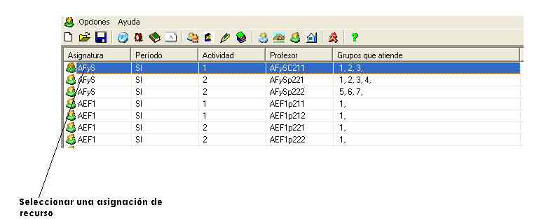
En la parte inferior de la ventana aparece una sección para editar las asignaciones de recursos:
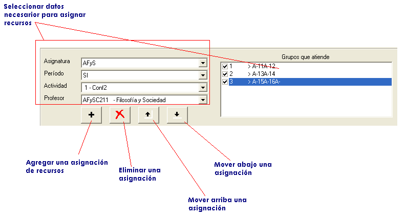
Lugares por actividad
Similarmente a Profesores por actividad, existe una sección para editar las asignaciones de recursos:
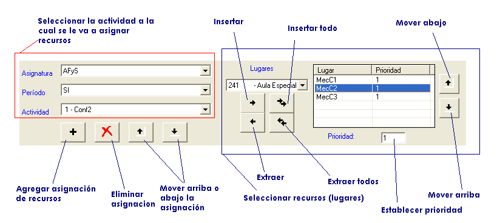
Nota: Cuando se agregan recursos tanto de profesores como lugares, el sistema duplica la selección que usted tenga en e listado. Esto es muy útil, y se hizo con toda intención para agilizar la entrada de datos. De esta forma usted puede, por ejemplo, duplicar la asignación de recursos de un período determinado.
Ejemplo:
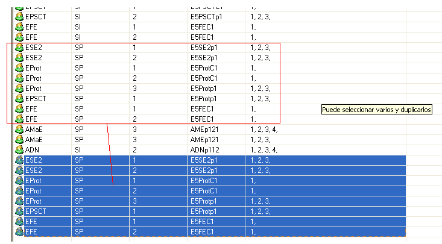